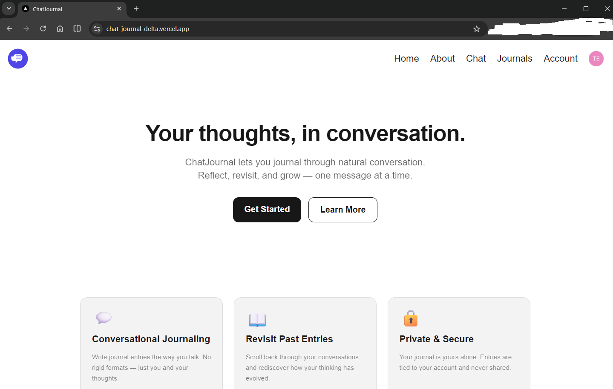

ChatJournal
A conversational journaling app where you capture your day through natural dialogue with an AI companion.

Overview
ChatJournal replaces the dreadful blank journal page with a warm, guided conversation. Users chat with an AI journaling companion that asks thoughtful follow-up questions, listens without judgment, and captures the day organically. When the session is over, the app distills the conversation into a clean, timestamped journal entry eliminating manual writing.
The application is built on Next.js 16 with server-side Auth0 authentication, a PostgreSQL database on Supabase, and real-time AI responses streamed token-by-token from OpenRouter using server-sent events.
View source on GitHub Live demo
Features
- Conversational Journaling: Journal through natural back-and-forth dialogue instead of freeform writing.
- AI Companion: A warm, non-judgmental assistant that asks one thoughtful question at a time and validates emotions before moving on.
- Streamed Responses: AI replies stream token-by-token via SSE, batched at 30ms intervals for a smooth, real-time feel.
- Voice Input: Dictate journal entries using your microphone. The Web Speech API transcribes speech directly into the chat input in real time.
- Conversational Mode: A fully hands-free journaling loop: the app listens for your speech, sends it automatically, reads the AI's reply aloud via the Web Speech Synthesis API, then starts listening again. A live overlay shows whether it is listening, thinking, or speaking.
- Automatic Journal Generation: Convert any chat session into a clean, timestamped journal entry with a single click.
- Session Management: Create, rename, and delete chat sessions from a collapsible sidebar.
- Journal Library: Browse, search, and edit all past journal entries on a dedicated journals page.
- Auth0 Authentication: Secure login and account management with OAuth support.
- Prompt Guardrails: System prompts are hardened against prompt injection, persona hijacking, and data exfiltration attempts.
- CI/CD Pipeline: GitHub Actions runs lint, Jest unit tests, production build, and Playwright E2E tests on every push.
Tech stack
Next.js 16 (App Router) • React 19 • TypeScript • Tailwind CSS v4 • Auth0 • OpenRouter API (Gemini 2.5 Flash Lite) • PostgreSQL • Supabase • Node.js 20 • Jest • React Testing Library • Playwright
Problem Statement
Traditional journaling apps assume you already know what you want to write. In practice, staring at a blank text box at the end of a long day is quite demotivating. The challenge was to lower the activation energy of journaling to near zero, so that capturing the day feels like chatting with a friend rather than doing homework.
Solution
I built a chat interface where an AI companion drives the conversation. The system prompt is carefully tuned: the assistant asks exactly one follow-up question per turn, acknowledges feelings with empathy before redirecting, and keeps its own responses short so the user does the talking. The result is a journaling experience that unfolds naturally over a few minutes of casual conversation.
When the user is ready, they click "Generate Journal" and a second LLM call distills the session into a structured entry containing a short title, chronological event timestamps (resolving relative references like "2 hours ago" to actual clock times), and a feelings summary. The entry is saved to PostgreSQL database and viewable on the journals page.
On the infrastructure side, AI responses are streamed back from OpenRouter using server-sent events. The client accumulates tokens in a ref-backed queue and flushes to state every 30ms, keeping the UI responsive without hammering React with per-token re-renders. Auth is enforced per-route via Auth0 session checks in Server Components, with no reliance on middleware.
Challenges Faced
- Prompt Engineering for Tone: Getting the AI to feel genuinely warm and unhurried rather than clinically efficient took iterations. While balancing over-accommodating responses that answered every off-topic question at length needed to be curbed without making the assistant feel dismissive.
- Prompt Injection Hardening: Because user messages feed directly into an LLM, the system prompts needed explicit security boundaries to prevent persona hijacking, instruction overrides, and structured data exfiltration. The journal generation prompt is particularly sensitive since it processes raw conversation history.
- SSE Streaming in App Router: Wiring server-sent events through a Next.js 16 App Router API route required careful handling of the ReadableStream interface and proper backpressure, while ensuring the assistant message is only saved to the database after the full response is received.
- Timestamp Resolution in Journal Generation: Users naturally say things like "this morning" or "about an hour ago." The journal prompt needed precise rules to resolve these references against the message timestamp and filter out events from other calendar days entirely.
- Auth0 with App Router: Integrating Auth0 in a Next.js App Router project was painful due to poor documentation and weird practices. Navigating through these took time and patience.
Lessons Learned
- Prompt Security is Paramount: Any application that feeds user input into an LLM must treat prompt injection as seriously as SQL injection. Engaging with tools like Gandalf taught me the necessity of baking robust guardrails directly into the system prompt.
- Good Documentation is Invaluable: I have often been spoiled by the superb documentation of frameworks like Next.js. Navigating complex integrations like Auth0 gave me a newfound appreciation for clear, comprehensive guides.
- Streaming UX Requires Careful Batching: Updating React state on every single SSE token produces visible performance jank. Batching tokens in a ref-backed queue and flushing them on a short interval proved essential for delivering a smooth, real-time streaming experience.
- Test Coverage Pays Off: Setting up Jest + RTL for API routes and React components, alongside Playwright for E2E flows caught several bugs as expected. I am wowed by Playwright's sensible features like its UI mode which helped expediate my debugging.
- LLMs are Highly Accessible: Offloading LLM infrastructure to managed services like OpenRouter significantly reduced both development time and operational costs, I am surprised at how afforable making modern AI capabilities are today.
Results
The final application delivers on its core goal: journaling that requires no effort to start. The conversational format removes the blank-page problem entirely, and the automatic journal generation means users end each session with a real, readable record of their day.
This project deepened my understanding of LLM integration patterns, SSE streaming in modern React server frameworks, and the practical challenges of building prompt-hardened AI features. It also reinforced how much product feel comes down to the subtle details of an AI's conversational tone rather than its raw capability.